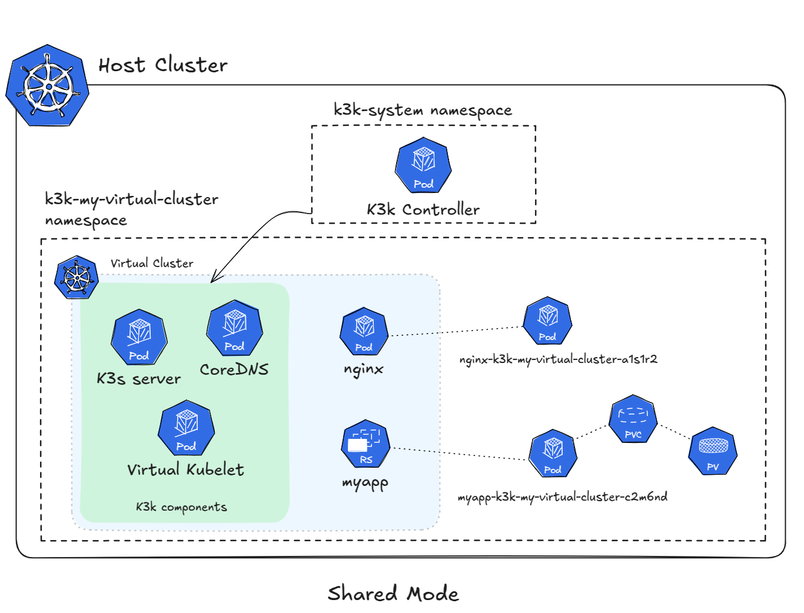

|
Esta es documentación inédita para SUSE® Virtual Clusters v1.2.0 (Dev). |
Arquitectura
Los clústeres virtuales son clústeres de Kubernetes aislados provisionados en un clúster físico. K3k aprovecha K3s como el plano de control del clúster de Kubernetes debido a su huella ligera.
K3k proporciona dos modos para desplegar clústeres virtuales: - Compartido (por defecto) - Virtual
Modo Compartido
El modo compartido por defecto utiliza un servidor K3s como plano de control con una configuración de servidores sin agente. Con esta opción habilitada, los servidores no ejecutan el kubelet, el entorno de ejecución de contenedor, ni el CNI. El servidor utiliza una implementación de Virtual Kubelet específica de K3k, que programa las cargas de trabajo y otros recursos que se necesiten eventualmente en el clúster anfitrión. Este proveedor de Virtual Kubelet de K3k maneja la reflexión de recursos y la ejecución de cargas de trabajo dentro del entorno del clúster anfitrión compartido.

Redes y almacenamiento
Debido a esta infraestructura compartida, el CNI es el mismo que el configurado en el clúster anfitrión. Lo mismo ocurre con el almacenamiento disponible, donde las Clases de Almacenamiento y los Volúmenes son los del clúster anfitrión.
Para proporcionar el aislamiento necesario, K3k aprovecha las Políticas de Red.
Compartición de Recursos y Límites
En el modo compartido, K3k aprovecha los 'ResourceQuotas' y 'LimitRanges' de Kubernetes para gestionar la compartición de recursos y hacer cumplir los límites. Dado que todas las cargas de trabajo del clúster virtual se ejecutan dentro del mismo espacio de nombres en el clúster anfitrión, se aplican ResourceQuotas a este espacio de nombres para limitar los recursos totales consumidos por un clúster virtual. LimitRanges se utilizan para establecer solicitudes y límites de recursos predeterminados para los pods, asegurando que las cargas de trabajo tengan asignaciones razonables de recursos incluso si no las especifican explícitamente.
A cada pod en un clúster virtual se le asigna un nombre único que incorpora el nombre del pod, el espacio de nombres y el nombre del clúster. Esto previene colisiones de nombres en el espacio de nombres del clúster anfitrión compartido.
Es importante entender que los ResourceQuotas se aplican a nivel de espacio de nombres. Esto significa que todos los pods dentro de un clúster virtual comparten la misma cuota. Mientras esto proporciona límites generales para el clúster virtual, también significa que la asignación de recursos es dinámica. Si una carga de trabajo no está utilizando toda su asignación de recursos, otras cargas de trabajo dentro del mismo clúster virtual pueden utilizar esos recursos, incluso si pertenecen a diferentes despliegues o servicios.
Este intercambio dinámico puede ser tanto un beneficio como un desafío. Permite una utilización eficiente de los recursos, pero también puede llevar a un rendimiento impredecible si las cargas de trabajo tienen demandas de recursos variables. Además, este enfoque dificulta garantizar un aislamiento estricto de recursos entre cargas de trabajo dentro del mismo clúster virtual.
| El intercambio de recursos de GPU es un área de investigación en curso. K3k está explorando activamente soluciones potenciales en esta área. |
Aislamiento y Seguridad
El aislamiento entre clústeres virtuales en modo compartido depende en gran medida de las Políticas de Red de Kubernetes. Las Políticas de Red definen reglas que controlan el tráfico de red permitido hacia y desde los pods. K3k configura las Políticas de Red para asegurar que los pods en un clúster virtual no puedan comunicarse con los pods en otros clústeres virtuales o con los pods en el clúster anfitrión, proporcionando una base sólida para el aislamiento de red.
Si bien las Políticas de Red ofrecen capacidades de aislamiento robustas, es importante entender sus características:
-
Integración de CNI: Las Políticas de Red se integran sin problemas con los plugins de CNI compatibles. K3k aprovecha esta integración para hacer cumplir el aislamiento de red.
-
Control Granular: Las Políticas de Red proporcionan un control granular sobre el tráfico de red, permitiendo políticas de seguridad ajustadas.
-
Escalabilidad: Las Políticas de Red escalan bien con el número de clústeres virtuales y aplicaciones, asegurando un aislamiento consistente a medida que el entorno crece.
K3k también utiliza la Admisión de Seguridad de Pods de Kubernetes (PSA) para hacer cumplir políticas de seguridad dentro de los clústeres virtuales basadas en los Estándares de Seguridad de Pods (PSS). Los PSS definen diferentes niveles de seguridad para los pods, restringiendo qué acciones pueden realizar los pods. Al configurar PSA para hacer cumplir un nivel específico de PSS (por ejemplo, baseline o restricted) para un clúster virtual, K3k asegura que los pods se adhieran a las mejores prácticas de seguridad establecidas y evita que utilicen características privilegiadas o realicen operaciones potencialmente peligrosas.
Los aspectos clave de la integración de PSA incluyen:
-
Aplicación por Espacio de Nombres: La configuración de PSA se aplica a nivel de espacio de nombres, proporcionando una postura de seguridad consistente para todos los pods dentro del clúster virtual.
-
Perfiles Estandarizados: PSS ofrece un conjunto de perfiles de seguridad predefinidos alineados con las mejores prácticas de la industria, simplificando la configuración de seguridad y asegurando un nivel base de seguridad.
La arquitectura de modo compartido está diseñada con la seguridad en mente. K3k emplea múltiples capas de controles de seguridad, incluyendo Políticas de Red y PSA, para proteger clústeres virtuales y el clúster anfitrión. Mientras que el modelo de espacio de nombres compartido requiere una configuración y gestión cuidadosas, estos controles proporcionan una base de seguridad robusta para ejecutar cargas de trabajo en un entorno multi-inquilino. K3k evalúa y mejora continuamente sus mecanismos de seguridad para abordar amenazas en evolución y garantizar el más alto nivel de protección para sus usuarios.
Modo Virtual
El modo virtual en K3k despliega clústeres K3s completamente funcionales (incluyendo tanto componentes de servidor como de agente) como clústeres virtuales. Estos clústeres K3s se ejecutan como pods dentro del clúster anfitrión. Cada clúster virtual tiene su propio servidor K3s dedicado y uno o más agentes K3s que actúan como nodos de trabajo. Este enfoque proporciona un fuerte aislamiento, ya que cada clúster virtual opera de manera independiente con su propio plano de control y nodos de trabajo. Mientras que estos clústeres virtuales se ejecutan como pods en el clúster anfitrión, funcionan como entornos Kubernetes completos y separados.

Redes y almacenamiento
Los clústeres virtuales en modo virtual tienen cada uno su propia configuración de red independiente gestionada por sus respectivos servidores K3s. Cada clúster virtual ejecuta su propio plugin CNI, configurado dentro de su servidor K3s, proporcionando un completo aislamiento de red de otros clústeres virtuales y del clúster anfitrión. Mientras que las redes de clústeres virtuales operan en última instancia sobre la infraestructura de red del clúster anfitrión, la configuración de red y la gestión del tráfico son completamente separadas.
Compartición de Recursos y Límites
La compartición de recursos en modo virtual se gestiona aplicando límites de recursos a los pods que componen el clúster virtual (tanto el pod del servidor K3s como los pods de agente K3s). A cada pod se le asigna una cantidad específica de CPU, memoria y otros recursos. Las cargas de trabajo que se ejecutan dentro del clúster virtual utilizan estos recursos asignados. Esto significa que el clúster virtual en su conjunto tiene un grupo de recursos definido determinado por los límites en sus pods constituyentes.
Este enfoque proporciona una forma clara y directa de controlar los recursos disponibles para cada clúster virtual. Sin embargo, requiere una planificación cuidadosa de los recursos para garantizar que cada clúster virtual tenga suficiente capacidad para sus cargas de trabajo.
Aislamiento y Seguridad
El modo virtual ofrece un fuerte aislamiento debido a los clústeres K3s dedicados desplegados para cada clúster virtual. Debido a que cada clúster virtual ejecuta su propio plano de control y nodos de trabajo separados, las cargas de trabajo están efectivamente aisladas entre sí y del clúster anfitrión. Esta arquitectura minimiza el riesgo de que un clúster virtual impacte a otros o al clúster anfitrión.
La seguridad en modo virtual se beneficia del aislamiento inherente proporcionado por los clústeres K3s separados. Sin embargo, las mejores prácticas de seguridad estándar de Kubernetes siguen aplicándose, y K3k enfatiza un enfoque de seguridad en capas. Mientras que los pods del servidor K3s a menudo se ejecutan con privilegios elevados (debido a la naturaleza de su función, que requiere acceso a recursos del sistema), K3k recomienda minimizar estos privilegios siempre que sea posible y adherirse al principio de menor privilegio. Esto se puede lograr configurando cuidadosamente las capacidades necesarias en lugar de depender del completo modo privileged. Se puede encontrar más información sobre las mejores prácticas de seguridad de K3s en la documentación oficial de K3s: https://docs.k3s.io/security (Este enlace proporciona orientación general sobre seguridad, incluyendo discusiones sobre capacidades y otros temas relevantes).
Actualmente, la seguridad en modo virtual tiene un riesgo de escalada de privilegios ya que los pods del servidor se ejecutan con privilegios elevados debido a la naturaleza de su función, que requiere acceso a recursos del sistema.
Componentes de K3k
K3k consta de dos componentes principales:
-
Controlador: El controlador K3k es un componente central que se ejecuta en el clúster anfitrión. Supervisa los recursos personalizados
Cluster(CRs) y gestiona el ciclo de vida de los clústeres virtuales. Cuando se crea un nuevoClusterCR, el controlador provisiona los recursos necesarios, incluidos los espacios de nombres, el servidor K3s y los pods de agente, así como las configuraciones de red, para crear el clúster virtual. -
CLI: El CLI de K3k proporciona una interfaz de línea de comandos para interactuar con K3k. Permite a los usuarios crear, gestionar y acceder fácilmente a clústeres virtuales. El CLI simplifica tareas comunes como la creación de
ClusterCRs, la recuperación de kubeconfigs para acceder a clústeres virtuales y la realización de otras operaciones de gestión.
VirtualClusterPolicy
K3k introduce el recurso personalizado VirtualClusterPolicy, una forma de configurar y aplicar configuraciones comunes y definir cómo operan sus clústeres virtuales dentro del entorno K3k.
El objetivo principal de los VCPs es permitir a los administradores gestionar y aplicar directivas consistentes de forma centralizada. Esto reduce la configuración repetitiva, ayuda a cumplir con los estándares organizacionales y mejora la seguridad y la consistencia operativa de los clústeres virtuales gestionados por K3k.
Una VirtualClusterPolicy está vinculada a uno o más espacios de nombres de Kubernetes. Una vez vinculadas, las reglas definidas en el VCP se aplican a todos los clústeres virtuales de K3k que se estén ejecutando o que se creen en ese espacio de nombres. Esto permite una aplicación flexible de directivas, lo que significa que diferentes espacios de nombres pueden utilizar sus propios VCP únicos, mientras que otros pueden compartir un único VCP para una configuración consistente.
Los casos de uso comunes para los administradores que aprovechan VirtualClusterPolicy incluyen:
-
Definir el modo operativo (como "compartido" o "virtual") para los clústeres virtuales.
-
Configurar cuotas de recursos y rangos de límites para gestionar eficazmente cuántos recursos pueden utilizar los clústeres virtuales y sus cargas de trabajo.
-
Hacer cumplir estándares de seguridad, por ejemplo, configurando etiquetas de Admisión de Seguridad de Pods (PSA) para los espacios de nombres.
El controlador de K3k monitorea activamente los recursos de VirtualClusterPolicy y las vinculaciones de espacio de nombres correspondientes. Cuando se aplica o actualiza un VCP, el controlador asegura que las configuraciones definidas se apliquen a los clústeres virtuales relevantes y sus recursos asociados dentro de los espacios de nombres objetivo.
Para un análisis profundo de lo que puede hacer VirtualClusterPolicy, junto con más ejemplos, consulta la página Conceptos de VirtualClusterPolicy. Para una lista completa de todos los campos de especificación, consulta el Referencia de API para VirtualClusterPolicy.
Comparación y compensaciones
K3k ofrece dos modos distintos para desplegar clústeres virtuales: shared y virtual. Cada modo tiene sus propias fortalezas y debilidades, y la mejor elección depende de las necesidades y prioridades específicas del usuario. Aquí tienes una comparación para ayudarte a tomar una decisión informada:
| Función | Modo Compartido | Modo Virtual |
|---|---|---|
Arquitectura |
Servidor K3s sin agente con Virtual Kubelet |
Clúster K3s completo (servidor y agentes) como pods |
Aislamiento |
Directivas de Red |
Plano de control y nodos de trabajo dedicados como pods |
Uso compartido de los recursos |
Dynamic, namespace-level ResourceQuotas |
Límites de recursos en los pods del clúster virtual |
Conectividad |
CNI del clúster anfitrión + Controlador de Ingress del clúster anfitrión (opcional) |
CNI propio del clúster virtual + Controlador de Ingress propio del clúster virtual |
Almacenamiento |
Almacenamiento del clúster anfitrión |
Aporta tu propio proveedor de almacenamiento |
Seguridad |
Admisión de seguridad de pods (PSA), Políticas de red |
Aislamiento inherente, PSA, Políticas de red |
Rendimiento |
Menor huella, más eficiente al ejecutarse directamente en el anfitrión |
Mayor sobrecarga debido a la ejecución de clústeres K3s completos |
Compensaciones:
-
Aislamiento vs. Sobrecarga: El modo
sharedtiene menos sobrecarga pero un aislamiento menor, mientras que el modovirtualproporciona un aislamiento más fuerte pero potencialmente una mayor sobrecarga debido a la ejecución de clústeres K3s completos. -
Uso Compartido de Recursos: El modo
sharedofrece un uso compartido de recursos dinámico dentro de un espacio de nombres, lo que puede ser eficiente pero menos predecible. El modovirtualproporciona recursos dedicados a cada clúster virtual, ofreciendo más control pero requiriendo una planificación cuidadosa.
Para más información sobre cómo elegir el modo adecuado, consulta Cómo elegir el modo.